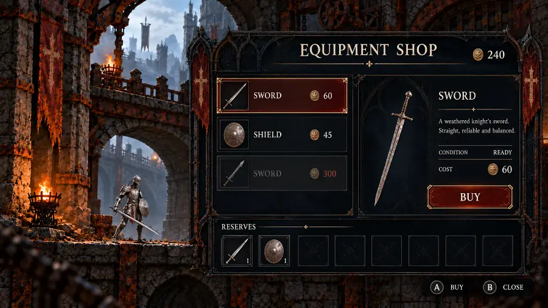
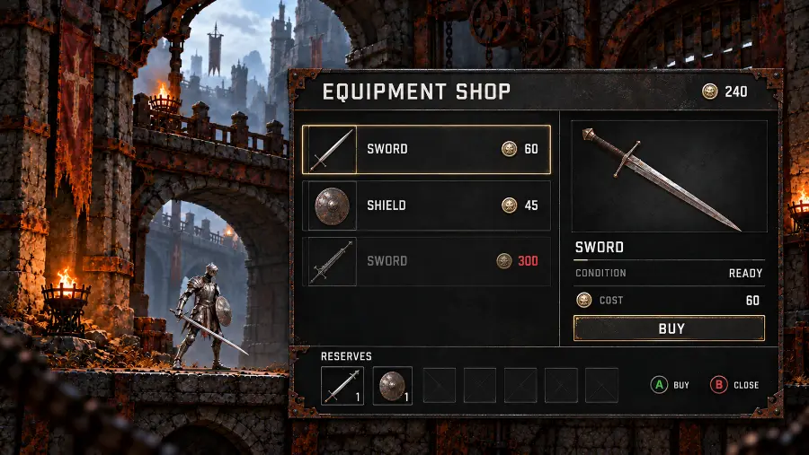
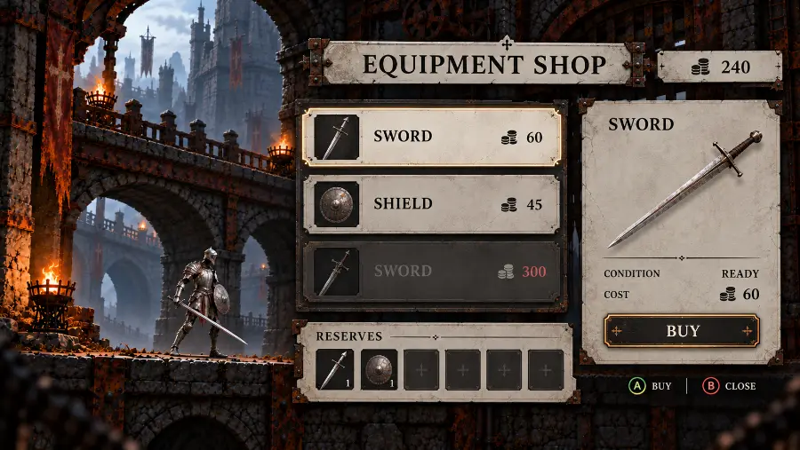
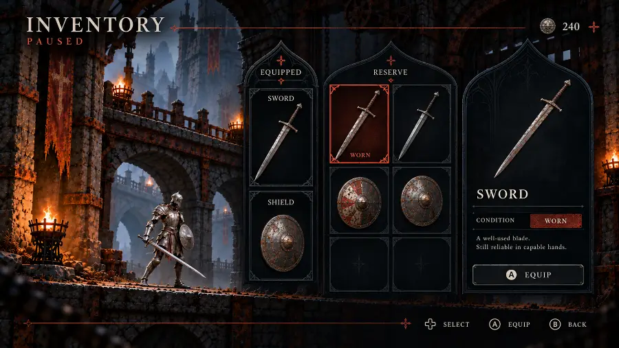
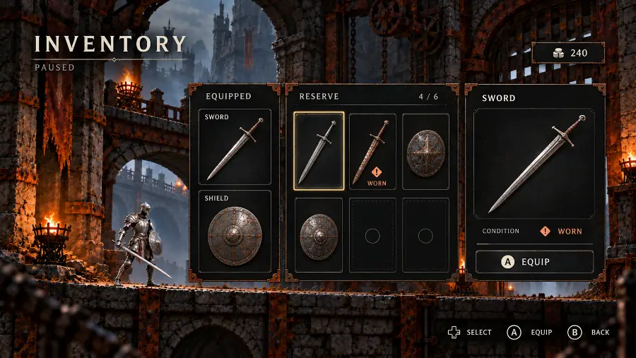
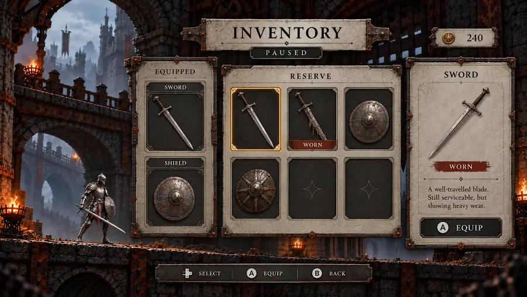
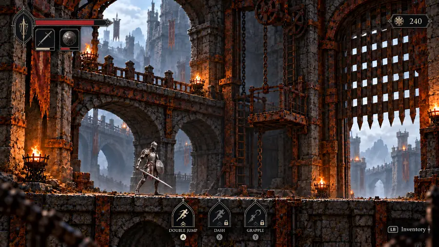
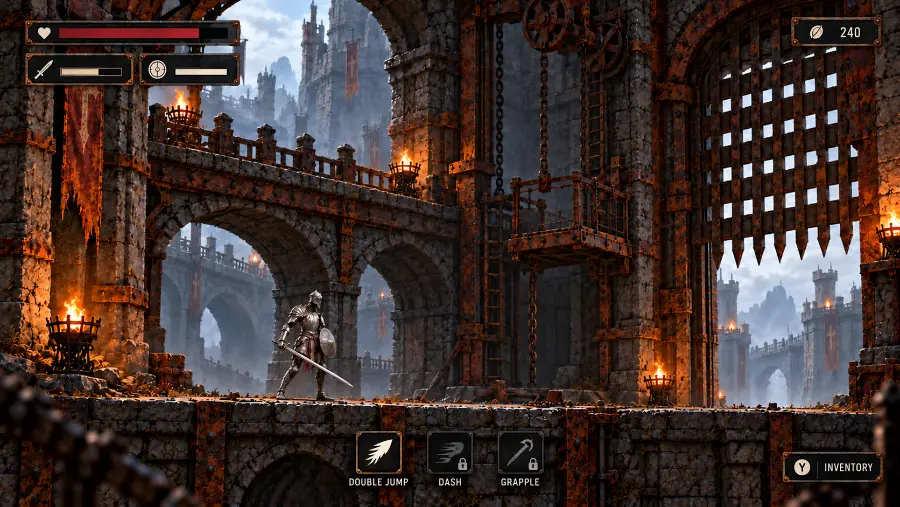

Gerado — não edite à mão · fonte: painel.json · 21 de outubro de 2026
Overview
Rust Gothic Metroidvania
Custom Rust engine and gothic 2.5D metroidvania. First Blender-to-sprite runtime proof implemented; physical input and owner visual review pending. All approved concepts preserved. Atualizado em 21 de outubro de 2026.
First rendering/runtime proof implemented · human review pendingRuntime milestone3 de 4 tasks
Confirmed decisions41
Direction choices pending0
Concept images39
Progresso do marco
3 de 4 tasksFase atual: Rendering and runtime proof
- Scope and foundationsfeita
- Visual foundationfeita
- Rendering and runtime proofatual
- Visual authoring toolsfutura
- Complete playable circuitfutura
- Native verification and handofffutura
Agora
- One room runs in the custom Rust runtimeReal Blender-generated animated sprites, linear normals and dynamic light, 3D room geometry, planar collision, side-following camera and a bounded executable movement graph. Six focused tests and native startup passed.
- Technical proxy ready for reviewKeyboard/mouse/controller mappings are implemented; physical input playtest and human visual review remain pending. The simple armor and blockout room do not replace the approved references. See Documentation for the eight-second GPU replay and lighting comparison.
- Next: visual room and graph authoringUse the same runtime for validated map/graph save/reload and playtest instances that preserve authored data. Full gameplay, progression and the complete level remain future work.
Com você
- Physical controls and visual reviewRun the first native proof and review the technical proxy. Device behavior and final art quality have not been owner-accepted.
Últimas imagens







